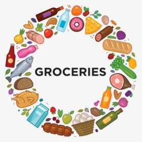

Grocery-History:
A grocery store (AE), grocery shop (BE) or simply grocery[1] is a foodservice retail store that primarily retails a general range of food products,[2] which may be fresh or packaged. In everyday U.S. usage, however, "grocery store" is a synonym for supermarket,[3] and is not used to refer to other types of stores that sell groceries. In the UK, shops that sell food are distinguished as grocers[3] or grocery shops (though in everyday use, people usually use either the term "supermarket" or a "corner shop"[4] or "convenience store").
Definition:
The definition of "grocery store" varies; U.S. and Canadian official definitions of "grocery store" exclude some businesses that sell groceries, such as convenience stores.